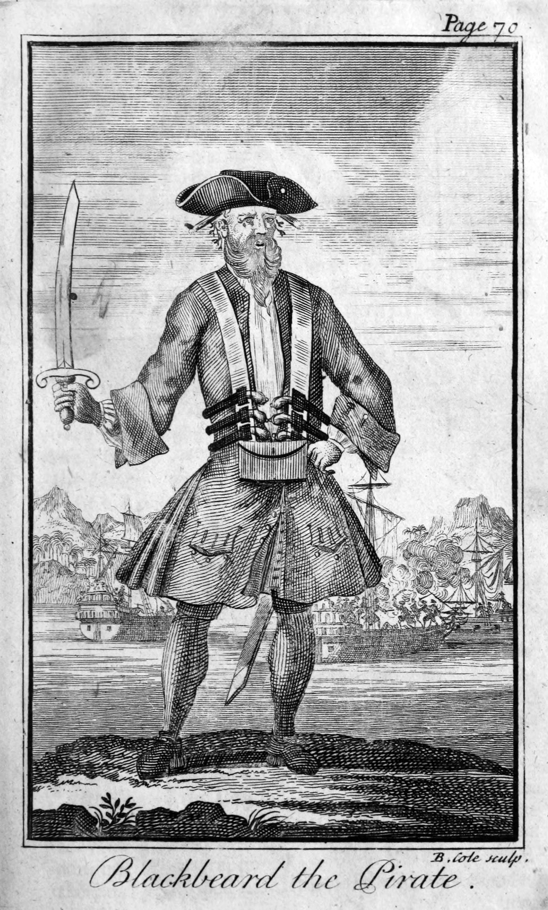

Pirates
Born Edward Teach, Blackbeard intimidated enemies by coiling smoking fuses into his long, braided facial hair and by slinging multiple pistols and daggers across his chest. In November 1717 he captured a French slave ship, later renamed the Queen Anne’s Revenge, and refitted it with 40 guns. With that extra firepower he then blockaded the port of Charleston, South Carolina, until the town’s residents met his demands for a large chest of medicine. After laying low for a few months in North Carolina, Blackbeard was killed in battle with the British Navy. Legend holds that he received 20 stab wounds and five gunshot wounds before finally succumbing. The so-called Golden Age of Piracy, of which Blackbeard was a major part, would only last a few more years. But countless books, plays and movies—from “Treasure Island” to “Pirates of the Caribbean”—would later bring a romanticized version of that era squarely into the public eye.

Blackbeard